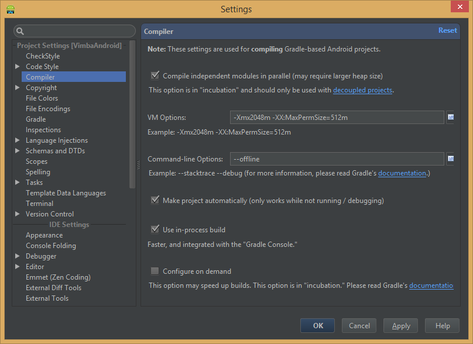
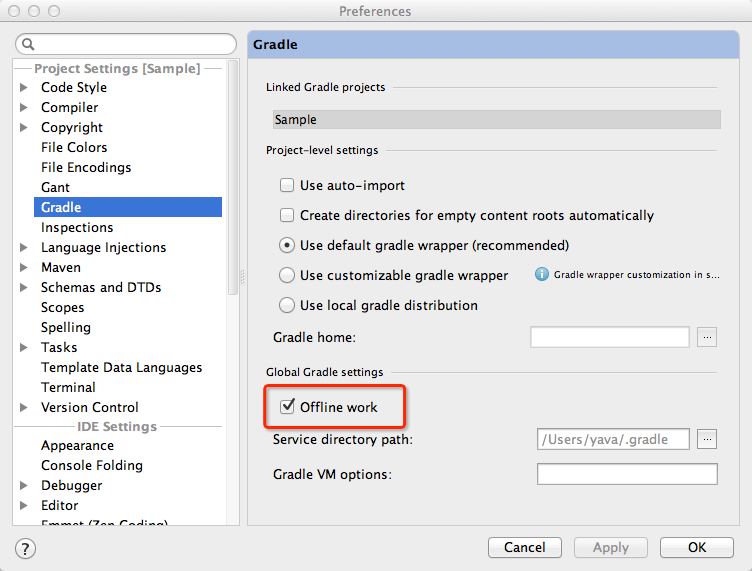

Building and running app via Gradle and Android Studio is slower than via Eclipse
I have a multi-project (~10 modules) of which building takes about 20-30 seconds each time. When I press Run in Android Studio, I have to wait every time to rebuild the app, which is extremely slow.
Is it possible to automate building process in Android Studio? Or do you have any advice on how to make this process faster?
In Eclipse, thanks to automatic building, running the same project on an emulator takes about 3-5 seconds.
This is my build.gradle file (app module):
buildscript { repositories { maven { url 'http://repo1.maven.org/maven2' } } dependencies { classpath 'com.android.tools.build:gradle:0.4' } } apply plugin: 'android' dependencies { compile fileTree(dir: 'libs', include: '*.jar') compile project(':libraries:SharedLibs') compile project(':libraries:actionbarsherlock') compile project(':libraries:FacebookSDK') compile project(':libraries:GooglePlayServices') compile project(':libraries:HorizontalGridView') compile project(':libraries:ImageViewTouch') compile project(':libraries:SlidingMenu') } android { compileSdkVersion 17 buildToolsVersion "17.0.0" defaultConfig { minSdkVersion 8 targetSdkVersion 16 } }
Answer
Hardware
I'm sorry, but upgrading development station to SSD and tons of ram has probably a bigger influence than points below combined.
Tools versions
Increasing build performance has major priority for the development teams, so make sure you are using latest Gradle and Android Gradle Plugin.
Configuration File
Create a file named gradle.properties in whatever directory applies:
-
/home/<username>/.gradle/(Linux) -
/Users/<username>/.gradle/(Mac) -
C:\Users\<username>\.gradle(Windows)
Append:
# IDE (e.g. Android Studio) users: # Settings specified in this file will override any Gradle settings # configured through the IDE. # For more details on how to configure your build environment visit # http://www.gradle.org/docs/current/userguide/build_environment.html # The Gradle daemon aims to improve the startup and execution time of Gradle. # When set to true the Gradle daemon is to run the build. # TODO: disable daemon on CI, since builds should be clean and reliable on servers org.gradle.daemon=true # Specifies the JVM arguments used for the daemon process. # The setting is particularly useful for tweaking memory settings. # https://medium.com/google-developers/faster-android-studio-builds-with-dex-in-process-5988ed8aa37e#.krd1mm27v org.gradle.jvmargs=-Xmx5120m -XX:MaxPermSize=512m -XX:+HeapDumpOnOutOfMemoryError -Dfile.encoding=UTF-8 # When configured, Gradle will run in incubating parallel mode. # This option should only be used with decoupled projects. More details, visit # http://www.gradle.org/docs/current/userguide/multi_project_builds.html#sec:decoupled_projects org.gradle.parallel=true # Enables new incubating mode that makes Gradle selective when configuring projects. # Only relevant projects are configured which results in faster builds for large multi-projects. # http://www.gradle.org/docs/current/userguide/multi_project_builds.html#sec:configuration_on_demand org.gradle.configureondemand=true # Set to true or false to enable or disable the build cache. # If this parameter is not set, the build cache is disabled by default. # http://tools.android.com/tech-docs/build-cache android.enableBuildCache=true
Gradle properties works local if you place them at
projectRoot\gradle.properties and globally if you place them at
user_home\.gradle\gradle.properties. Properties applied if you run gradle
tasks from console or directly from idea:
IDE Settings
It is possible to tweak Gradle-IntelliJ integration from the IDE settings GUI. Enabling "offline work" (check answer from yava below) will disable real network requests on every "sync gradle file".

Native multi-dex
One of the slowest steps of the apk build is converting java bytecode into single dex file. Enabling native multidex (minSdk 21 for debug builds only) will help the tooling to reduce an amount of work (check answer from Aksel Willgert below).
Dependencies
Prefer @aar dependencies over library sub-projects.
Search aar package on mavenCentral, jCenter or use jitpack.io to build any library from github. If you are not editing sources of the dependency library you should not build it every time with your project sources.
Antivirus
Consider to exclude project and cache files from antivirus scanning. This is obviously a trade off with security (don't try this at home!). But if you switch between branches a lot, then antivirus will rescan files before allowing gradle process to use it, which slows build time (in particular AndroidStudio sync project with gradle files and indexing tasks). Measure build time and process CPU with and without antivirus enabled to see if it is related.
Profiling a build
Gradle has built-in support for profiling projects. Different projects are
using a different combination of plugins and custom scripts. Using --profile
will help to find bottlenecks.
Suggest
You can ignore gradle update-to-date checks.

For Windows running Android Studio 1.5: Go to File -> Settings -> Build,
Execution, Deployment -> Build tools -> Gradle -> Check Offline work (as shown
in image)
down from ~30+ sec to ~3 sec